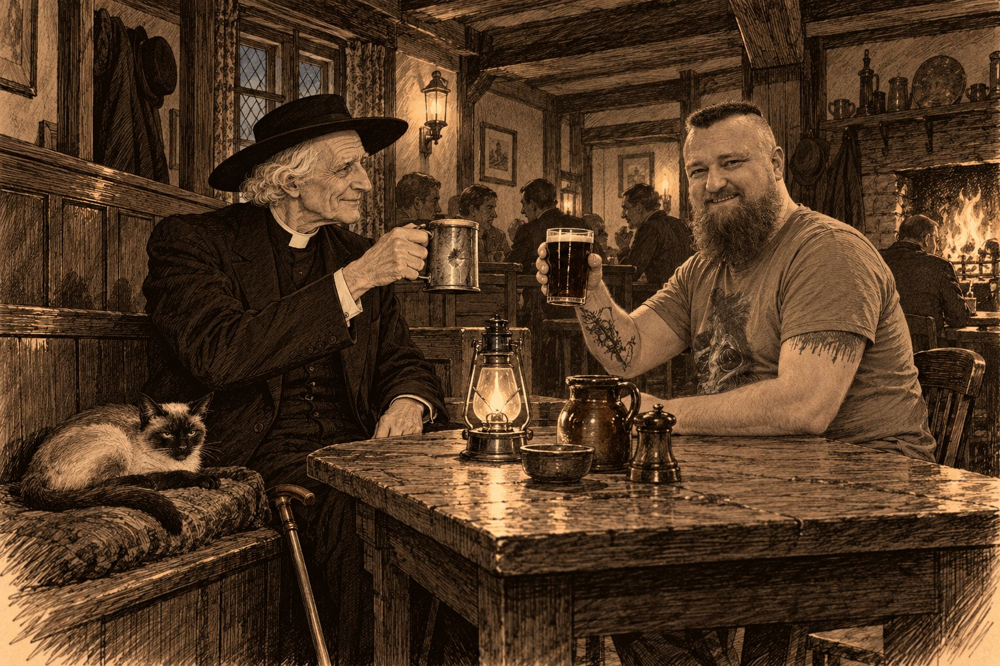

Послесловие

Этот цикл дался мне тяжелее всех прежних. Пока викарий хоронил прихожан и разговаривал с пчёлами, заболел наш кот — тайский, с тёмной маской и голубыми глазами, — и мы стали возить его на капельницы. Кто возил старого кота в клинику, знает, как это бывает: переноска на коленях, глаза за решёткой, и ничего ему не объяснишь. В его возрасте это значит многое, и врачи говорят с тобой тем осторожным голосом, который викарий Морс узнал бы сразу: так говорят люди, которые подбирают слова.
Поэтому Пами живёт почти сорок лет. Внимательный читатель, наверное, заметил, что так не бывает: котёнок из Бангкока приехал в Фены, когда Томми было три года, а осенью 1938-го он всё ещё лежит в корзинке в ногах у новорождённого внука. Это не ошибка в хронологии, а то, чего я хотел для своего кота: в литературе желание можно записать как факт, и я не нашёл причины себе отказать. Отсюда и правило цикла, которого нет ни в одной детективной традиции: коты не умирают. Люди умирают, в том числе те, кого жалко до слёз, а коты — нет.
Из рассказа в рассказ Пами ложится туда, где он нужнее всего. На пометку на полях приходской книги, пока не просохли чернила. На газету Сирила с обведённой строчкой, которую отец не стал читать. На шаль Агнес, когда викарий ещё не позволял себе думать о её сердце. В корзинку к младенцу, которого так и не окрестили. Я придумывал эти финалы с тем же чувством, с каким сидишь рядом с больным котом: пусть хоть где-нибудь всё будет так, как надо. Из той же мечты и пометки на полях, которые со временем перебрались на форзац, а потом на оборот последнего листа, потому что у записи сына кончилось место.
Честертона я перечитываю с удовольствием, и чем дальше, тем охотнее. Повторюсь: в его рассказах непонятно, чего больше, детектива или христианской морали. Только теперь, двадцать два раза попробовав писать так же, я понимаю, почему их нельзя разделить. Убийство у Честертона начинается с маленькой лжи самому себе, и священник находит убийцу тем же слухом, каким исповедник находит грех; улики только подтверждают то, что уже понято о человеке. Честертону так писать было весело, и мне тоже, даже в тяжёлые дни.
Цикл кончается 3 сентября 1939 года, в четверть двенадцатого утра, голосом Чемберлена по радио. Эту дату я выбрал в самом начале, но только к последнему рассказу понял, почему она меня не отпускала. Мы живём в сумасшедшее время, и оно слишком похоже на то, о котором я писал. Снова большая страна объясняет соседу, что тот не имеет права существовать отдельно. Снова перекраивают границы, и снова кто-то надеется, что агрессор насытится чужой землёй и успокоится. В 1938 году «мир для нашего времени» купили ценой Чехословакии, и через год этот мир кончился. Сегодня Украина, без союзных армий рядом, противостоит войне, которую ведёт Россия, и её человеконенавистнической стратегии — и стоит.
В той последней сцене викарий слушает премьер-министра и не слышит в его голосе фальши. Год назад этот человек говорил о мире, в который верил, теперь говорит о войне, и тоже не лжёт. Викарий называет это маленьким утешением, а Агнес, будь она жива, сказала бы, что маленькое — не значит никакое. Когда вокруг столько лжи, человек, который говорит правду, даже если прежде ошибался, уже держит строй.
Если бы мне дали выбрать время и место для жизни, я выбрал бы Британию между похоронами королевы Виктории и тем сентябрьским воскресеньем. Знаю, что это наивно: в эти годы поместились Сомма, испанка, стачка и депрессия, и половина моих рассказов о том, как люди всё это переносили. И всё-таки уютнее времени я не знаю: деревня с колокольней и трактиром, где все знают друг друга по имени, поезд по расписанию, письмо, которое доходит назавтра. В предисловии я писал, за что люблю британцев. Теперь прибавлю одно: этим качествам мало восхищаться, им надо соответствовать. Тогда в человеке само собой проявляется то, что раньше называли благородством, и объявлять о нём не нужно. Викарий Морс таков, хотя ни разу об этом не задумывается.
И ещё одно признание, раз уж это послесловие. Чай я не люблю. Знаю, что для англофила это почти измена, но поделать ничего не могу. Зато пиво люблю всей душой. Вот почему викарий пьёт тёмное в «Плуге», из своей оловянной кружки с вмятиной, с прихожанами и с кем придётся. Вот почему три года после гибели Томми он не пьёт вовсе, и это едва ли не самое страшное в цикле. А летом 1919-го он снимает пыльную кружку, вытирает её рукавом, а немного погодя хохочет так, как не смеялся три года, — и счастливее сцены, по-моему, в цикле нет. Дед пьёт весело и в компании; внук через тридцать лет будет пить один и мрачно. Если бы я мог зайти в «Плуг», я сел бы напротив викария, взял пинту тёмного, и мы бы просто чокнулись.
Теперь о том, что здесь правда. Сент-Гатлака на карте нет, хотя святой Гутлак, отшельник из Кроуленда, настоящий. Все убитые и все убийцы выдуманы, и я следил, чтобы ни один из них не оказался роднёй настоящим людям. Настоящие — события вокруг: Сандрингемская рота, пропавшая у Сувлы в 1915 году, и капеллан Пьерпонт Эдвардс, который через четыре года нашёл её могилы; танк, который в Линкольне строили под видом «водовоза для Месопотамии»; одиннадцать дней, пока Агату Кристи искала вся Англия, а она жила в Харрогейте под чужим именем; всеобщая стачка; Бленхейм, пришедший на Дерби по восемнадцать к одному; Георг VI, который с паузами одолел коронационное обращение по радио; Мюнхен. Настоящие и некоторые гости викария: Конан Дойл, который приезжает дважды, сначала с делом Эдалджи, потом спиритуалистом; Георг V, которого мы видим только со спины; Кристи, за которую я не позволил себе додумать ни одной мысли; молодые Льюис и Толкин; Дороти Сэйерс; Лавкрафт, который так и не доехал до Фенов и остался в письмах. Остальные пришли из книг: Холмс со своими пчёлами, Банни Мандерс, отец Браун и Фламбо, слепой Каррадос, Ханней, доктор Торндайк, Филип Трент. Тех, кто погиб на самом деле, я почти никогда не называю поодиночке: их имена принадлежат им, а не моим сюжетам.
Книги и сериалы рассказывают о семье Морса по-разному. У Декстера Морс родился в 1930 году, в «Индеворе» — в 1938-м. Я взял год из «Индевора», и внук викария родился в сентябре 1938-го, перед самым Мюнхеном. Мать в «Индеворе» зовут Констанс. У меня она ведёт книгу вызовов в линкольнской таксомоторной конторе и, как квакерша, отказывается присягать на дознании — и именно поэтому ей верят. Отец, Сирил, в каноне таксист с легендой про Ага-хана. У меня он прежде ходит юнгой на Балтику, потом служит шофёром у владельца скаковых лошадей, и вся легенда вырастает из одного кивка из окна лимузина. В старом сериале Морса в Стамфордской школе дразнили Язычником, потому что он никому не говорил своего имени. В цикле у прозвища появляется вторая причина: внука так и не крестили, и дед, смеясь до слёз, предсказывает, что в школе ему этого не простят.
Спасибо Гилберту Кийту Честертону и Наталье Трауберг, чьим голосом Честертон говорит по-русски. Колину Декстеру, который родился в Стамфорде, в нескольких милях от моего выдуманного прихода, и придумал инспектора с именем корабля. Создателям «Индевора», которые подарили инспектору молодость. Хорнунгу, Браме, Бьюкену, Фримену, Бентли и Конан Дойлу, у которых я взял взаймы героев и, надеюсь, вернул их в целости. Агате Кристи, Дороти Сэйерс и Говарду Филлипсу Лавкрафту, которых я позвал как живых людей и постарался не обидеть. И нашему коту, ради которого Пами прожил почти сорок лет. Пусть и он живёт столько же.
В той же сцене внук викария хватает со стола стило и трясёт его, прислушиваясь, как оно звенит о чернильницу. Дед протягивает руку, чтобы отобрать, и не отбирает. «Это остаётся дома», — говорит он. Мне хочется сказать то же самое обо всём, что я люблю и что было со мной, пока я писал эти рассказы: о Честертоне, о той Британии, которой больше нет, о пиве в хорошей компании, о коте, который ложится туда, где он нужнее. Это остаётся дома. Чтобы было к чему вернуться.
Павел Юрич
Октябрь, 2026, Тбилиси
Тбилиси, октябрь 2026